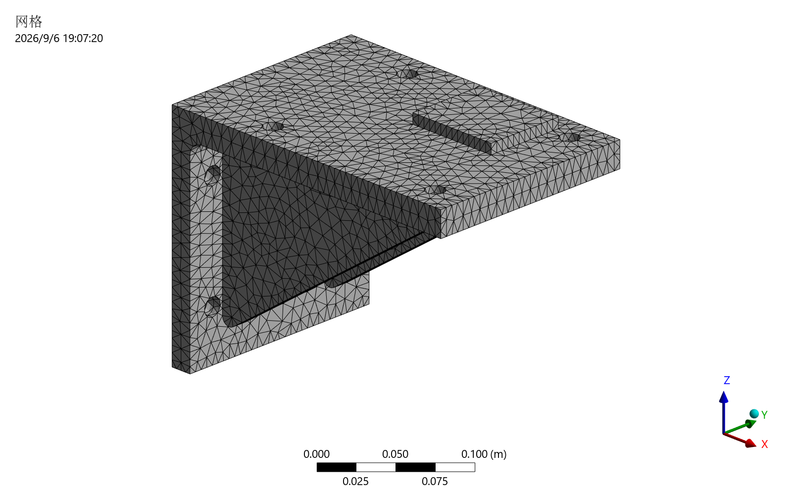
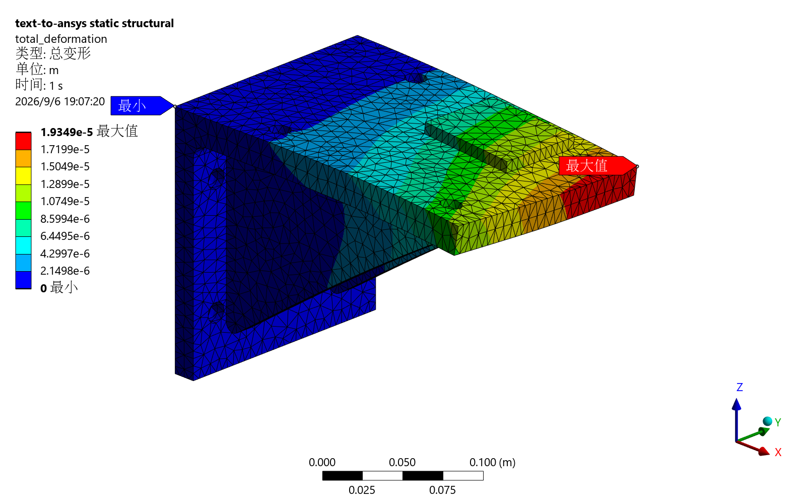
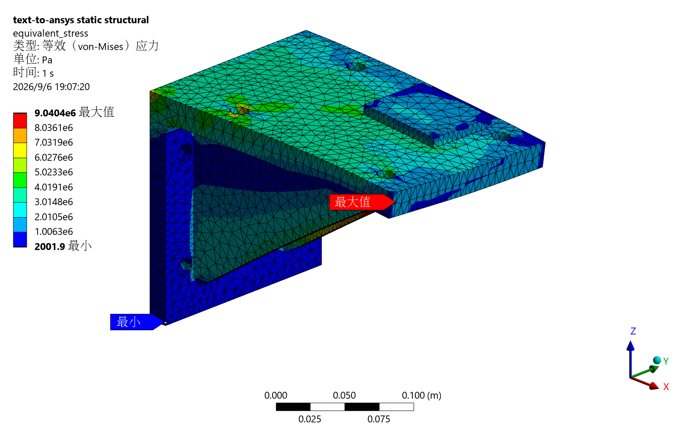

Mechanical 工程验收报告：双肋设备托架 — 2026-09-06
日期按本机 America/Chicago（UTC−05:00）记录。
本报告的稳定路径现用于双肋托架主算例。正文整理自上一轮已完成的托架验证，
本次展示替换未新增求解。旧悬臂梁仅保留为 tests/fixtures/cantilever 内部解析回归夹具；
早期悬臂梁、模板同步与 gRPC 诊断结果属于历史记录，不计入本报告的五次求解。
English report · 交互实例 · 公开摘要 · 工况详情 · 来源与哈希
结果
已记录的 5 项真实集成测试全部通过，对应 5 次串行 Mechanical 求解，耗时 208.16 秒。
运行均为 SOLVED、synthetic: false。三档网格的位移和承载台应力统计量变化满足
预设容差；力、力矩平衡以及扣除自重后的全节点位移线性校核全部通过。
上一轮验证另完成一次 8 mm 名义试算，以及首次连续测试中成功的一个 12 mm 算例，合计
7 次已完成的真实求解。首轮后续四个算例在 Python 启动阶段失败，不计为真实求解。
重开工程导出图片没有调用求解。上一轮完整离线回归记录为 252 passed、20 skipped；
当时的 ruff check . 通过。这些是历史基线，不代表本次替换后重新执行的测试。
跳过项目保持未执行，不计入通过。
工程校核总状态保持 WARN：全局应力峰值仍需局部应力解释，未计算安全系数。 本报告的通过条件针对所定义的回归算例。
算例与工况
源文件位于 examples/gusseted-bracket，包括 simulation.yaml、 建模说明、 几何生成脚本和 CAD 属性。 这是自主定义的工程回归模型，尺寸和载荷为明确的测试输入。
- 单一连通实体，34 个 CAD 面，外形 240 × 160 × 188 mm。
- 背板厚 16 mm，托板厚 20 mm，两条加强肋厚 12 mm；8 个直径 14 mm 的安装孔。
- 背板与托板内圆角 R10，肋板轮廓圆角 R6；偏心承载台为 70 × 60 × 8 mm。
- 背面 X-min 全固定，表示理想刚性安装界面。
- 前端面三向力为 [1000, 1500, −500] N，合力作用点 [240, 0, 170] mm。
- 承载台压力 0.8 MPa，面积 4200 mm²，合力沿 −Z 为 3360 N，作用点 [165, 35, 188] mm。
- 自重沿 −Z，重力加速度 9.80665 m/s²。
- CAD 体积 1,532,280.529125 mm³；质心 [83.288077, 0.767483, 134.178550] mm。 按密度 7850 kg/m³，参考质量 12.028402 kg，参考重量 117.958330 N。
本机为 ANSYS Student Mechanical 2026 R1，采用显式 mechanical_batch。
Python 3.13.2、PyMechanical 0.13.2、PyDPF 0.16.1；独立读取本机 DPF Server 11.0 的结果。
求解输入 ds.dat 实际确认 E = 200 GPa、泊松比 0.3、密度 7850 kg/m³ 和 SOLID187。
面加载所需 SURF154 不作为不支持的物理类型误拒绝；DPF 另核对实体单元为二次拓扑。
五次求解的数值结果
| 工况 | 网格尺寸 mm | 节点数 | 单元数 | 最大总位移 mm | 最大等效应力 MPa |
|---|---|---|---|---|---|
| 三向力 + 偏心压力 + 自重 | 12 | 7,452 | 3,890 | 0.019119825 | 8.987440 |
| 三向力 + 偏心压力 + 自重 | 8 | 11,680 | 6,241 | 0.019221773 | 9.008833 |
| 三向力 + 偏心压力 + 自重 | 5 | 27,980 | 15,508 | 0.019348617 | 9.040418 |
| 仅自重 | 5 | 27,980 | 15,508 | 0.000159944 | 0.084056 |
| 两倍三向力和压力 + 原自重 | 5 | 27,980 | 15,508 | 0.038545872 | 18.016176 |
5 mm 混合工况中，承载台最大绝对 Z 位移为 −0.013381324 mm，节点平均 Z 位移为 −0.009268916 mm，前端面最大绝对 Y 位移为 +0.005086454 mm。 方向位移极值保留符号，不等于面平均值。全局应力峰值仅报告，未用作强度通过条件。
独立工程校核
力与力矩平衡：PASS
以 CAD 面积、质心及体积计算压力合力与自重；先核验 Mechanical 实际选中面的位置、
面积和法向，再按节点 ID 对齐 DPF 坐标与反力，计算 ΣR 和 Σ(r × R)。
力矩原点为全局坐标原点，单位为 N·m。
5 mm 混合工况：
| 量 | X | Y | Z |
|---|---|---|---|
| 外载荷合力 N | 1000.000000 | 1500.000000 | −3977.958330 |
| 支反力合量 N | −999.999998 | −1500.000002 | 3977.967017 |
| 外载荷合力矩 N·m | −372.690531 | 854.224522 | 360.000000 |
| 支承合力矩 N·m | 372.690562 | −854.224661 | −360.000000 |
该工况力相对残差为 1.9891 × 10⁻⁶，力矩相对残差为 1.4196 × 10⁻⁷。 全部五次求解的最大相对残差分别为 0.007362%（力）、0.001448%（力矩）， 均小于预设的 0.5% 和 1% 容差。残差按合残差向量范数除以对应外载荷向量范数计算。 固定支承节点位移检查、非空网格、结果单位与有限值检查均通过。
网格变化检查：PASS
两次相邻加密均按 abs(fine - coarse) / abs(fine) 比较。
| 指标 | 12 → 8 mm | 8 → 5 mm | 容差 |
|---|---|---|---|
| 最大总位移 | 0.5304% | 0.6556% | 5% |
| 承载台平均 Z 位移 | 0.0713% | 0.7879% | 5% |
| 承载台平均等效应力 | 1.2553% | 2.5512% | 10% |
| 承载台等效应力第 95 百分位 | 2.3662% | 2.6099% | 10% |
5 mm 承载台平均应力为 1.291825 MPa，第 95 百分位为 2.027259 MPa。 这些统计量对承载台节点等权计算，未作面积加权；本次通过表示这组网格和指标满足 所设变化阈值，未建立全场误差上界或固定边缘峰值的通用收敛保证。
扣除自重后的全场线性：PASS
设 P 为三向力和压力，G 为自重，验证 u(2P+G) = 2u(P+G) − u(G)。
三个 5 mm 结果具有相同的 27,980 个节点 ID，坐标差为 0。
逐节点比较容差为 1e-12 m + 1e-6 × ||预测位移||，失败节点数为 0；
全场相对 L2 误差 1.8077 × 10⁻¹¹，最差节点绝对误差 1.5611 × 10⁻¹⁵ m。
自重保持不变，因此未用包含自重的最大位移直接作两倍比较。
连续执行问题与修复
首次串行测试的第一个算例完成后，测试进程内的 DPF 初始化使后续 Python 3.13 子进程
读取到 ANSYS 自带 Python 3.10 的标准库，报出 AssertionError: SRE module mismatch。
该轮报告为 5 项测试失败，原始目录与日志全部保留。
修复仅作用于新增测试：独立数值校核在单独 Python worker 中执行，保留独立 DPF 日志。 实际用既有 RST 确认 worker 前后父进程环境完全一致，随后在新目录完整重跑五次求解并通过。 未放宽数值容差，未更改生产编译器或默认 dry-run 行为。
几何生成使用 build123d 0.9.1；0.11.1 在本机导入系统字体时失败。ANSYS 与 CAD 依赖范围未更改。 STEP 的 Git 属性禁用换行转换，避免几何属性记录的 SHA256 在不同平台检出后失配。
图片与模型边界
五个算例的原生网格、总位移、等效应力 PNG 均通过导出记录及 PNG 文件校验。
代码复核还发现，仅检查 PNG 文件头会误接受截断文件；已在开发依赖中加入 Pillow，
增加文件结构校验和完整像素解码，并补充正常图像、仅有文件头、缺少结尾块三个回归用例。
修改后对五次求解的全部 15 张原图重新完成解码校验并通过，未为图片检查重复求解。
补充证据为 png-decode-verification.json，三个离线回归用例均通过。
另从已保存的 5 mm 工程导出 Z 向上及底部视图；导出前后工程文件 SHA256 相同。
已查看几何、底部、网格、位移和应力图：双肋和孔洞保留，网格连续，最大位移出现在
自由端区域，应力热点位于肋与托板过渡附近。图片检查不替代数值校核。
背面全固定代表刚性安装界面。安装孔只是保留的几何特征，未求解螺栓预紧、接触、滑移
或安装板柔度；肋、板和承载台按连续实体传力，未分辨焊缝细节。CLI 的
stress_singularity_review 继续为 WARN，safety_factor 和自动 visual_review
继续为 NOT_RUN。上述图片查看记录在 CLI 自动校核之外，保存在 visual-review.json，附有实际查看图片的 SHA256。
复现与原始记录
主集成测试入口为 test_engineering_bracket.py。
按算例 README执行；真实测试需要
ANSYS_AVAILABLE=1 和显式 ANSYS_TEST_BACKEND=mechanical_batch，保持串行并使用新输出目录。
本机原始证据目录：
build/bracket-study-20260906-02/engineering-bracket0/：最终五次求解、study-summary.json、逐节点证据、每次校核、Mechanical 工程与 RST。build/bracket-study-20260906-01/engineering-bracket0/：首轮失败证据。build/engineering-bracket-20260906-01/：名义试算、dry-run、doctor、两轮 JUnit 和终端日志、离线回归、补充图片。
这些运行目录保留在已忽略的本机记录中，不作为公开软件包内容。公开 JSON 通过字段 白名单提取数值、状态和来源哈希，不附带私人绝对路径、许可证日志、工程文件或 RST。
5 mm 原始展示图
以下图片均来自已保存的 mixed_5mm 工程的 fine-views 导出，未重新求解。
首页、封面与实例使用同一工况；图片逐文件按 SHA256 核对后发布，未裁剪或改色。



Images used courtesy of ANSYS, Inc. 几何视图与 底部视图用于查看实体与双肋、孔洞特征， 不包含新的模拟结果。
{kind=link}
{kind=link}
WARN 与 NOT_RUN
- 五次运行的
stress_singularity_review: WARN保留，全局应力峰值未用作强度验收条件。 safety_factor: NOT_RUN：输入未给定屈服强度；visual_review: NOT_RUN是自动检查状态。 上述人工图片查看及其哈希记录独立保存，不会将自动状态改写为 PASS。- 混合压力／重力工况的 CLI
reaction_balance: NOT_RUN；测试中的独立力与力矩验收为 PASS。 未启用的cantilever_analytical也保持 NOT_RUN。 - 其他 Mechanical 版本与远程执行未验证。早期本机 gRPC 握手失败，未在此次托架研究中重测。
- 网格变化验收只适用于列出的两次加密和四项统计量，未建立全场误差上界， 不包含固定边缘峰值的通用收敛或设计批准。